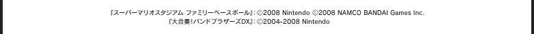

みんなで！『スーパーマリオスタジアム』＆『大合奏！バンドブラザーズＤＸ』で作曲教室
近頃のタイトルに、“みんなで”遊べるゲームが増えたと思いませんか？ ゲームって、ひとりで遊ぶだけでなく、集まった友達や家族とわいわいできるのがいいところ。
今回のＮＯＭでは、Ｗｉｉから『スーパーマリオスタジアム ファミリーベースボール』とＤＳソフトとして『大合奏！バンドブラザーズＤＸ』をご紹介。
『スーパーマリオスタジアム』ではみんなで遊ぶベースボールゲームとしての楽しみ方を、『バンブラＤＸ』では作曲講座と題して、作曲ツールとしてのバンブラを紹介します。どちらもスタッフのみなさんとプレイしながら、コツや楽しみ方を教えてもらえました。
